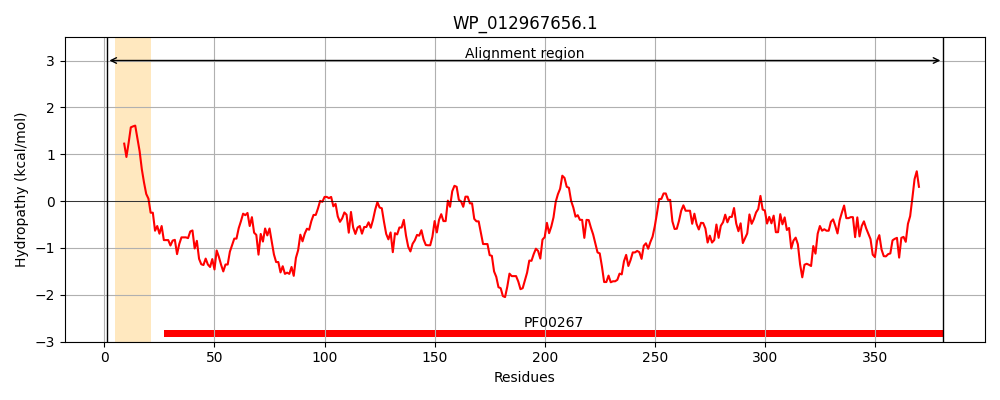
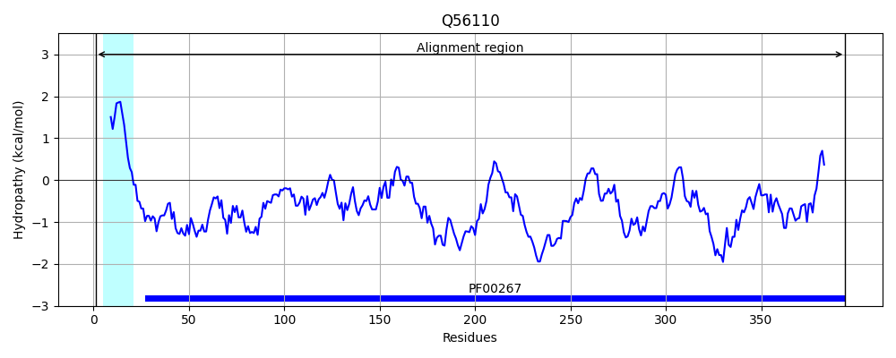
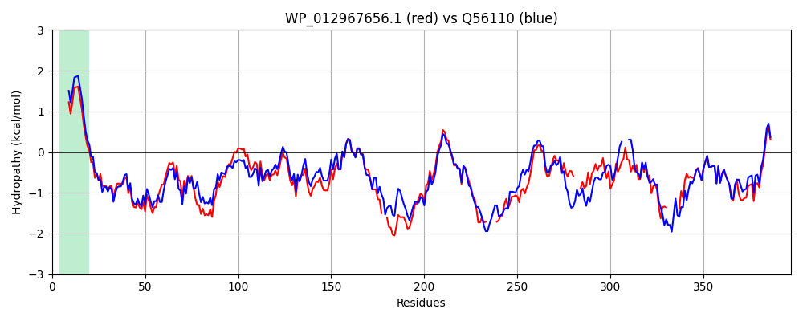

Hit Accession: Q56110
Hit TCID: 1.B.1.1.27
Hit Description: gnl|BL_ORD_ID|14117 gnl|TC-DB|Q56110|1.B.1.1.27 Outer membrane protein S1 OS=Salmonella typhi GN=ompS1 PE=3 SV=1
Mach Len: 397
e:0.000000
Query TMS Count : 1
Hit TMS Count: 1
TMS-Overlap Score: 0.850000
Predicted Substrates:None
BLAST Alignment:
Score: 1554 , Bit scores: 603 bits, E-value: 0.0e+00, Alignment length: 397, Percentage identity: 76
Query: 1 MKRKVLALMVPALLMANAVNAAEIYNNNGNKLDLYGKVDGLHYFSDDTSEDGDQTYARFGIKGETQIASELTGYGQWEYNIQANTTEKEGANSWTRLAFAGLKFADYGSLDYGRNYGVVYDIESWTDMLPEFGGDTYTQTDVYMTGRTNGVATYRNSDFFGLVDGLHFALQYQGNNEN--AGSGEGTNNGGKRKLARENGDGFGISSYYDLDMGISFGAAYSSSDRTHNQLAEA-----RSSQRYANGDKADAWTVGAKYDANNIYLAAMYAETRNMTFYG---NDSFGGIANKTQNFEVVAQYQFDDFNLPLRPSVAYLQSKGKDLYTYS------RYGDKDLVKYVDVGMTYYFNKNMSTYVDYKINLLDEDDRFYKNSGIATDDIVALGLVYQF 381
M RKVLAL+VPALL+A A NAAEIYN NGNKLDLYGKVDGL YFSD+ +DGDQ+YAR G KGETQI LTGYGQWEYNI+ NTTE EGANSWTRL FAGLKF +YGS DYGRNYGV+YDIE+WTD LPEFGGDTYTQTDVYM GRTNGVATYRN+DFFGLV+GL+FALQYQGNNEN AG+GEGT NGG RKLARENGDGFG+S+ YD D G+S GAAYSSSDR+ NQ+A YA G+ A+AWT+GAKYDA N+YLAAMYAETRNMT+YG + G IANKTQNFEVVAQYQFD LRPS+AYLQSKGKDL RY DKDLVKYVDVGMTYYFNKNMSTYVDYKINLLDEDD FY N+GIATDDIV +GLVYQF
Sbjct: 1 MNRKVLALLVPALLVAGAANAAEIYNKNGNKLDLYGKVDGLRYFSDNAGDDGDQSYARIGFKGETQINDMLTGYGQWEYNIKVNTTEGEGANSWTRLGFAGLKFGEYGSFDYGRNYGVIYDIEAWTDALPEFGGDTYTQTDVYMLGRTNGVATYRNTDFFGLVEGLNFALQYQGNNENGGAGAGEGTGNGGNRKLARENGDGFGMSTSYDFDFGLSLGAAYSSSDRSDNQVARGYGDGMNERNNYAGGETAEAWTIGAKYDAYNVYLAAMYAETRNMTYYGGGNGEGNGSIANKTQNFEVVAQYQFD---FGLRPSIAYLQSKGKDLGGQEVHRGNWRYTDKDLVKYVDVGMTYYFNKNMSTYVDYKINLLDEDDDFYANNGIATDDIVGVGLVYQF 394 | Protein Hydropathy Plots: |
|---|
|  |  |
Pairwise Alignment-Hydropathy Plot:
|
|---|
|  |